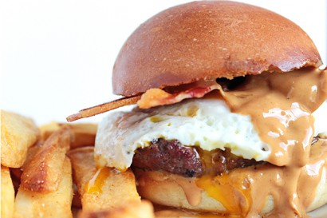

Protein Punch

Image source: tastykitchen.com/recipes/main-courses/peanut-butter-egg-and-bacon-burger/
Description
Yes, another peanut butter recipe. This is the combination of two unique, and delicious burgers I have encounterd. The image above includes bacon, but my rendition does not.
The first was the "Peanut Butter Burger I had in Destin, FL while on vacation.
The second was an "Egg Burger" or "Brunch Burger" which they serve at many restaurants.
To my knowledge, I have not seen a combination of the two being sold anywhere. And if so, the burger doesn't have as good a name.
Ingredients
- 1 TBSP Peanut Butter (Preferrably Natural)
- 1/3 LB of 80/20 or 70/30 ground beef
- 1 Pasture Raised egg
- 1 Brioche hamburger bun
Steps
- Grill your burger to your desired internal temperature
Optional: you may add salt and pepper to the ground beef, but no other spices are needed.
- While the burger is grilling, fry your egg to your desired temperature. I like mine "over medium" or "over hard" for this sandwich
- Turn off the grill and toast the buns for 1 minute
- Add peanut butter to the top slice of bun
- Place the cooked patty on the bottom slice, and top with your fried egg
- Enjoy!